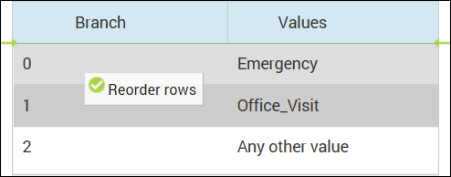

Reordering Branches
Reorder the branches to rearrange their display order in the tree.
Use the
Edit Split dialog to reorder the branches in a condition node. To open the
Edit Split
dialog, select the condition node and then select
Edit Split from the
Edit
drop-down menu or from the shortcut menu.
The dialog displays the order of the branches as they are displayed in the decision tree. Note that the 0 branch is the top branch of the split. You can only reorder branches in levels of boolean, enumeration, or string type.

Changing the Display for the Branches
To reorder the branches, select the row with the branch number that you want to move. Drag and drop it on top of the branch number where you want it to appear. The order of the branches automatically readjusts. The tooltip changes to a green checkmark when the reordering operation is valid.